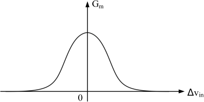
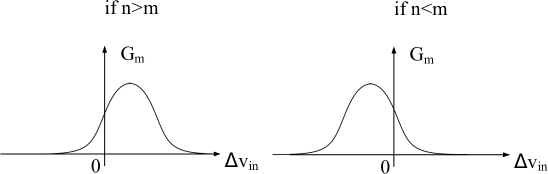

Design of a Gm-C Dynamic Amplifier with High Linearity and High Temperature and Power Supply Voltage Stability
높은 선형성과 온도·전압 안정성을 동시에 잡은 Gm-C 동적 증폭기 설계 기술이 공개됐어요.
왜 HBM/DRAM 인터페이스에서 증폭기의 선형성과 안정성이 중요한가요?
고대역폭 메모리(HBM)와 차세대 DRAM 시스템에서 신호 무결성은 핵심 과제예요. 데이터 전송 속도가 빨라질수록 아날로그 프론트엔드 회로에서 발생하는 비선형 왜곡은 비트 오류율(BER)을 직접적으로 악화시켜요. 특히 감지 증폭기(Sense Amplifier)나 읽기 경로 증폭기는 작은 차동 신호를 정확하게 증폭해야 하기 때문에 트랜스컨덕턴스의 선형성이 매우 중요해요. 이 문제가 해결되지 않으면 고속 동작 환경에서 신호 왜곡이 누적되어 시스템 전체 신뢰성이 저하될 수 있어요.
또한 HBM 스택 구조에서는 다이 온도가 -40°C에서 120°C 이상까지 넓은 범위로 변동할 수 있어요. 전원 전압도 패키지 기생 성분과 전류 급증(current surge)으로 인해 10% 이상 흔들리는 상황이 빈번하게 발생해요. 이러한 환경 변화 속에서도 증폭기의 이득이 일정하게 유지되지 않으면 판독 마진(read margin)이 줄어들고 타이밍 오류가 발생할 수 있어요. 결국 온도 및 전압 변동에 강인한 바이어스 설계가 고성능 메모리 회로에서 필수 요소가 된 거예요.
기존 단일 차동 쌍 기반 증폭기는 입력 범위가 커질수록 트랜스컨덕턴스 비선형성이 심화되고, 온도·전압 변동에 따른 바이어스 드리프트 문제를 동시에 해결하기 어려웠어요. 이 논문은 두 가지 문제를 각각 회로 토폴로지 혁신과 일정 GM 바이어스 기법으로 분리해 해결하는 접근법을 제안해요.
어떻게 선형성과 안정성을 동시에 달성했나요?
본 논문의 핵심 회로 기법은 두 개의 비대칭 차동 쌍(asymmetric differential pair)을 병렬로 구성하는 방식이에요. 일반적인 단일 차동 쌍은 입력 신호가 커질수록 테일 전류의 분배 불균형으로 인해 gm이 급격히 감소하는 비선형 특성을 보여요. 반면 두 차동 쌍의 크기 비율과 바이어스 전류를 비대칭으로 설정하면, 한쪽이 비선형 구간에 진입할 때 다른 쪽이 보완적으로 동작하여 전체적인 gm 평탄도가 크게 향상돼요. 이 원리를 통해 -40mV에서 +40mV의 차동 입력 범위 내에서 거의 일정한 이득을 유지할 수 있게 됐어요.
바이어스 안정성 문제는 일정 GM(Constant-Gm) 바이어스 회로를 채택함으로써 해결했어요. 이 회로는 MOSFET의 gm이 온도 및 전압에 따라 변화하는 것을 피드백 루프로 보상하여 바이어스 전류를 자동으로 조정해요. 결과적으로 증폭기 전체의 트랜스컨덕턴스와 이득이 넓은 온도 범위(-40°C ~ 120°C)와 전원 전압 변동(±10%) 환경에서도 안정적으로 유지돼요. 이 두 가지 기법의 조합이 이 논문의 핵심 설계 철학이에요.
비대칭 차동 쌍은 각 쌍의 gm 곡선이 서로 다른 입력 지점에서 피크를 가지도록 설계되어, 합산 시 평탄한 복합 gm 곡선을 만들어내요. 여기에 Constant-Gm 바이어스를 결합함으로써, 공정·전압·온도(PVT) 변동에 무관하게 이 평탄도가 유지되는 이중 보호 구조를 완성한 거예요.
실제로 얼마나 선형적이고 안정적인 성능을 보였나요?
시뮬레이션 결과, 제안된 증폭기는 70.5dB의 총 고조파 왜곡(THD) 성능을 달성했어요. 이는 -40mV ~ +40mV의 차동 입력 범위에서 이득이 거의 일정하게 유지됨을 의미해요. 온도 -40°C ~ 120°C, 전원 전압 ±10% 변동 조건에서 1mV 차동 입력 기준 이득의 표준 편차는 262mdB에 불과했으며, 이득 분포 범위도 15.1dB에서 16.3dB 사이로 1.2dB 이내에 집중됐어요. 이는 PVT 변동에 대한 높은 강인성을 수치로 입증한 결과예요.
HBM 설계에 어떻게 적용할 수 있나요?
HBM 설계자 관점에서 이 연구는 읽기 경로(Read Path) 아날로그 증폭단에 직접 응용 가능한 아이디어를 제공해요. HBM에서 TSV(Through-Silicon Via)를 통해 전달되는 신호는 인터커넥트 손실과 반사로 이미 왜곡된 상태로 수신단에 도달하는 경우가 많아요. 이런 상황에서 감지 증폭기 이전 단계에 높은 선형성의 프리앰프를 배치하면 신호 마진을 효과적으로 확보할 수 있어요. 특히 ±40mV 입력 범위는 HBM의 소신호 차동 진폭 영역과 잘 매칭되는 스펙이에요.
온도 안정성 측면에서도 HBM 스택 내 열 환경은 매우 가혹해요. 베이스 다이(Base Die)에 가까운 하위 DRAM 레이어는 냉각이 유리하지만, 상위 레이어는 자체 발열과 인접 다이의 열 간섭을 동시에 받아요. 이 논문에서 제안한 Constant-Gm 바이어스 기법은 이러한 광범위한 온도 구배 환경에서도 각 레이어의 증폭기 이득 균일성을 보장하는 데 효과적으로 활용될 수 있어요. 나아가 전압 안정성은 HBM PDN(Power Delivery Network) 설계 마진을 완화하는 데도 기여할 수 있어요.
다만 이 연구는 아직 arXiv 프리프린트 단계로 실제 실리콘 측정(Tape-out) 결과가 아닌 시뮬레이션 기반 검증이에요. 비대칭 차동 쌍 구조는 레이아웃 대칭성 확보가 어렵고 매칭 오류에 민감할 수 있으므로, 실제 공정에서의 몬테카를로 시뮬레이션 및 포스트 레이아웃 검증이 반드시 필요해요. 또한 고속 동작 환경에서의 주파수 응답 특성 및 위상 마진 데이터가 논문에 충분히 제시되지 않아 동적 성능에 대한 추가 검토가 필요해요.
Figure 갤러리


